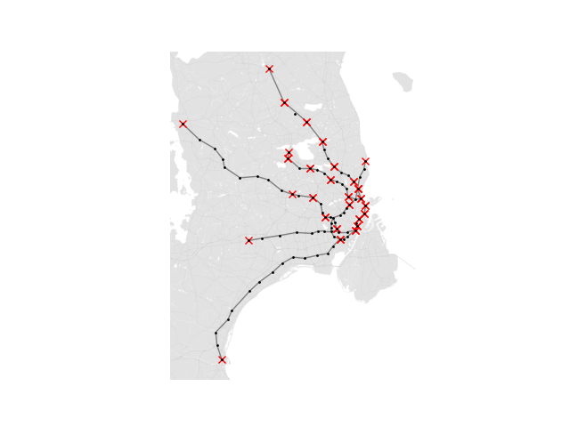

Carrier-based Rail System
Model-Based Systems

Model-Based Systems
Wouldn’t it be nice if taxis never got stuck in traffic? If buses took you to straight your destination, with no stops or detours? If you never had to share a metro carriage with other passengers? The mode of transport known as Personal Rapid Transit (PRT) offers all these advantages and more. In this report we are looking at the benefits of the PRT system compared to a traditional rail network. Through research and various tests, we have come up with a set of measurements and controls which we can use to model a PRT in place of S-trains in the greater Copenhagen area. Through simulation we were able to conduct tests which provided data we could then use to compare the two systems, enabling us to tell which scenarios the system excelled in, and which they struggled with.
It is estimated that around one-fifth of global CO2 emissions originate from transport and that around 45% of these trans- port emissions originate from personal road transport such as cars, busses and motorcycles. As the world focuses on how to reduce CO2 emissions to reach climate goals, encour- aging private citizens to use public transit methods such as trains more often is an obvious way to reduce emissions. A common issue with public transportation is that it is con- sidered slower and more inconvenient than private trans- portation .J Bischoff et al. Have simulated a city-wide replacement of private cars with autonomous taxi fleets of various sizes, and the simulation results suggest that, a fleet of 100 000 vehicles will be enough to replace the car fleet in Berlin at a high service quality for customers. Our project focuses on determining if the same could be done, but with the Danish rail network instead of taxis. A way to decrease the average commuting time for passengers using the rail network could be to introduce smaller car- riers with lower capacity than traditional passenger trains, but with increased acceleration, deceleration and optimized route planning. We mean to break from traditional trains with a fixed route. Instead, the carriers will pick up passen- gers until it reaches its maximum capacity. The carrier will then proceed to calculate an optimal route from its current station based on its passengers’ destinations.
In order to create a simulation of our model, first, we had to create a model of the current railway system in place. This action was made to understand how the train system works and compare our model’s performance results with the ex- isting solution. Since the model we planned to build was a document using the existing train assemblies, we had to research how the train worked. Therefore, we decided that Copenhagen’s S-train rail system would serve as the basis for the simulation. Our research is based on Copenhagen’s existing S-train infrastructure, which required in-depth re- search on the train system, the signalling system, the control centre, and how they work. To measure our solution, we needed to build two models; the first is the simulation of the train system and how it works with a changing number of passengers and trains. In contrast, the second model is our hypothesis model, which we wanted to test given the variation number of passengers.